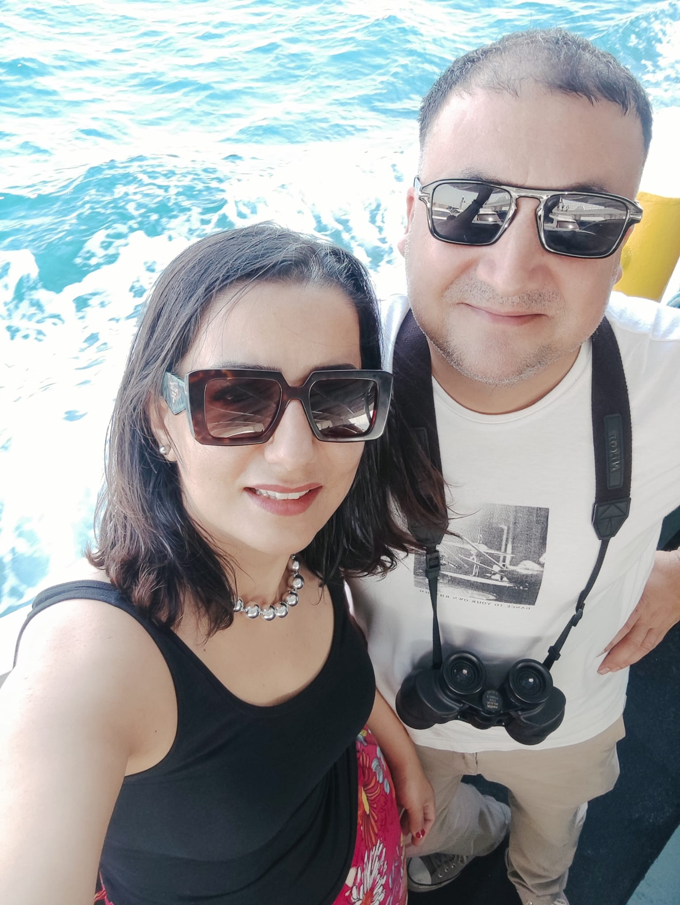
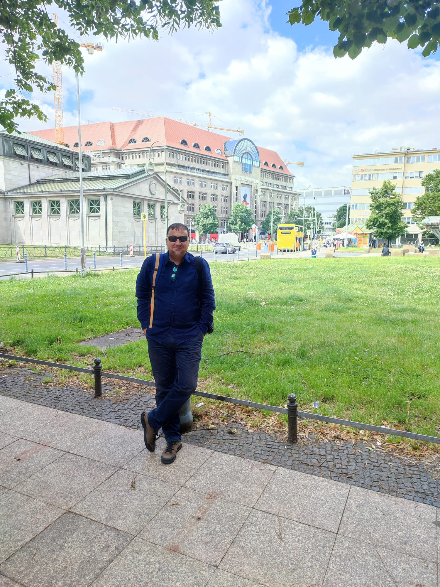
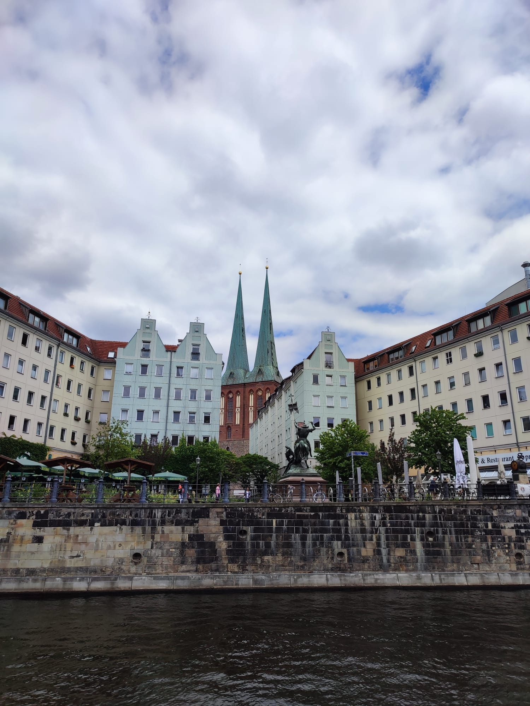
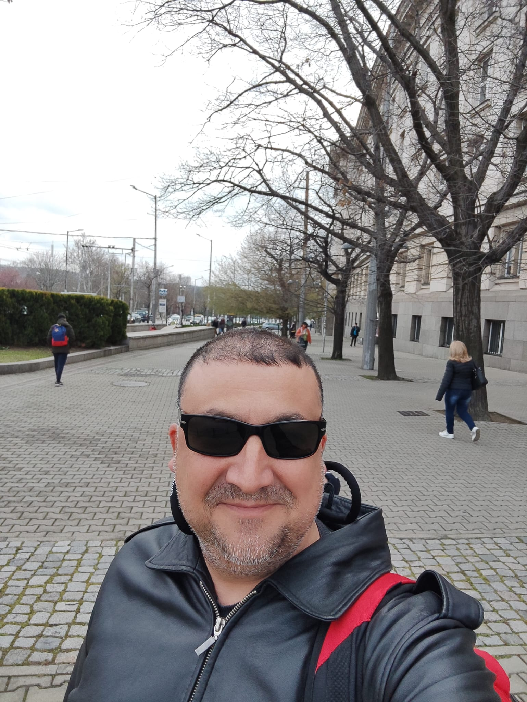
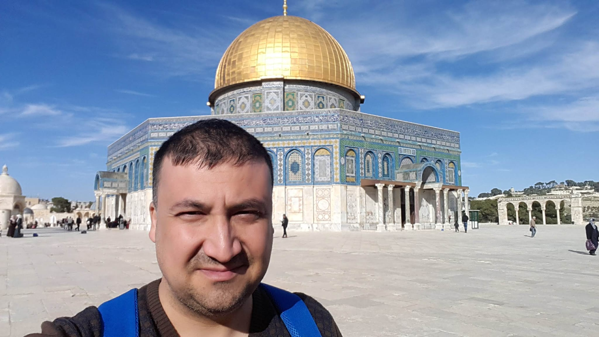
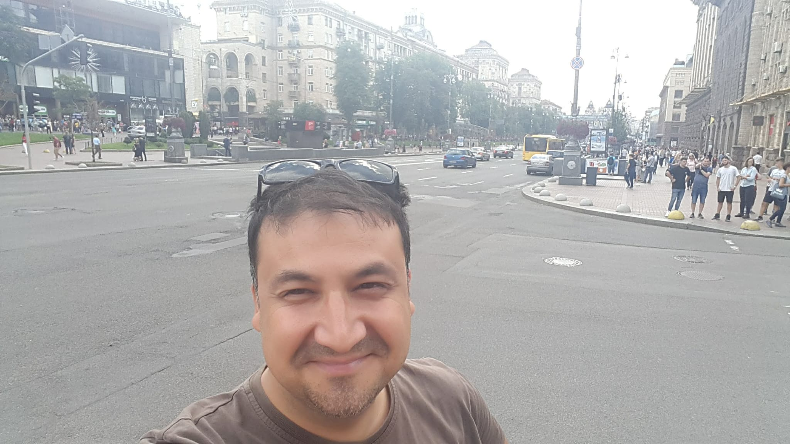

1978 yılında Antalya’da doğdum. Eğitim hayatım boyunca farklı şehirlerde yaşama fırsatı buldum; liseyi Konya’da, üniversiteyi ise Ankara’da okudum. Akdeniz Üniversitesi ve Viadrina Üniversitesi’nde master yaparak akademik kariyerimi tamamladım.
İş hayatıma İş Bankası’nda başladım ve burada 17 yıl boyunca mali analist ve müşteri ilişkileri yöneticisi olarak çalıştım. 2021 yılında kendi girişimimiz olan UMV Yazılım firmasının ortağı oldum ve şu anda bu firmada finans direktörü olarak görev yapıyorum.
Evliyim ve üç oğlum var. Boş zamanlarımda davul çalmayı ve gezmeyi çok severim. Blues ve caz müzik başta olmak üzere, emek harcanarak yapılmış tüm müzik türlerini dinlemekten büyük keyif alırım. Ayrıca mimari ve heykel de ilgi alanlarım arasında yer alır.
2024 Ağustos ayında Acunmedya Akademi bünyesinde frontend yazılım derslerine başladım...
İşte birkaç resim:
     